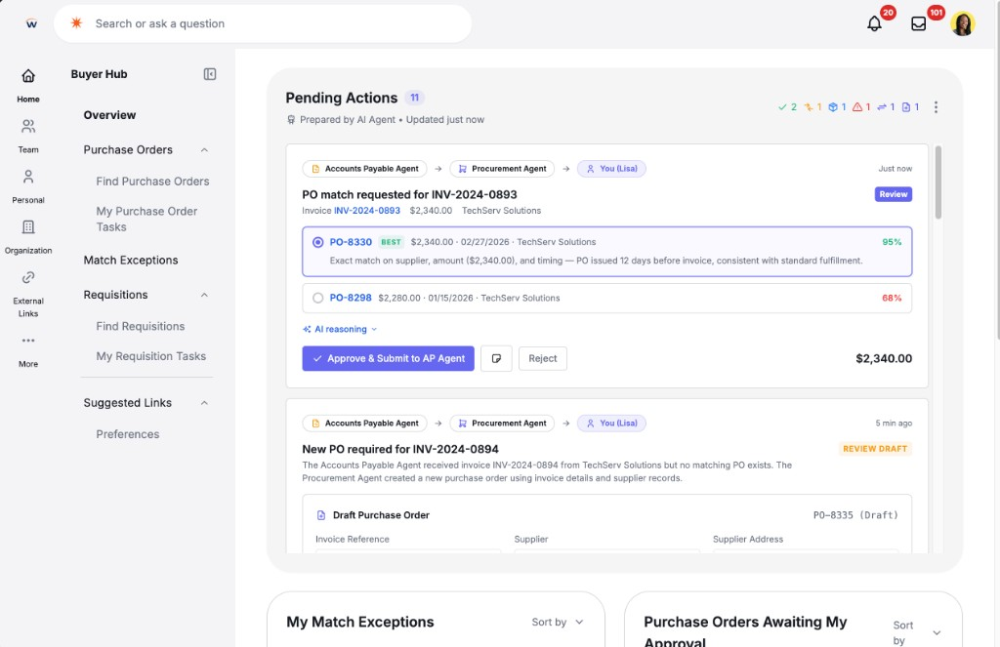

Thinking · Multi-agent UX
Work in progress — thinking I’m developing alongside shipped work.

Intake is what shipped: one item, one request, and a person on anything that spends money. When the ask doesn’t fit, I send it to another spend agent instead of stretching this one. How that handoff should look — what gets passed, who can see it — is still open.